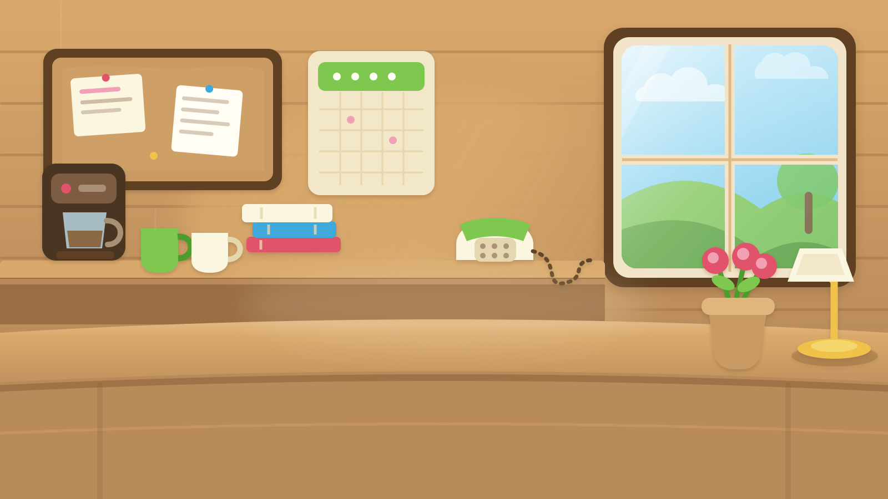
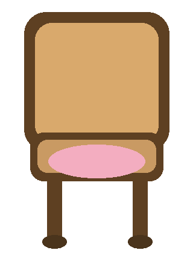

APPROVAL PREVIEW — not on the live site yet
Photo character cut out and seated in the office chair (desk covers legs). Approve before production change.


Arms still joyful/standing from the photo. Next pass can rest arms on the desk if you want a truer sit.